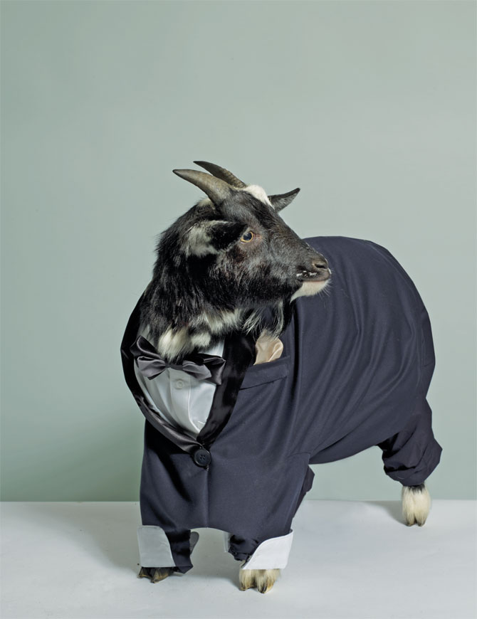

Take a 2,500-pound pizza oven, 14 beer taps, one cask-conditioned ale and what do you get?
This restauraunt started by Johnathon Martin (Formaly Precious) was one of the many risks he took
in his journey out of the farm.
“One day I woke up and realized that there has to be more to life than just eating grass and living
the farm,” said Martin, "I didn't just want to be a family pet, wasting my time, I wanted more in
life, I wanted to own my own restaurant." It was at this point Johnathon retired from being the
family goat, and became the first goat to own a business.
